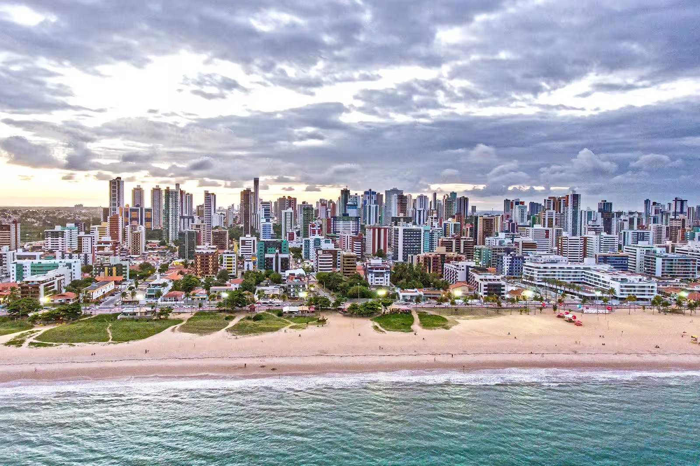

COMO CHEGAR EM JOÃO PESSOA E CIRCULAR PELA CIDADE
João Pessoa está situada no ponto mais oriental do Brasil. Em linha reta, está a 1.700 km de Brasília e a 2.200 km de São Paulo.
Turistas que vêm do Sudeste, do Sul, do Centro-Oeste e do Norte vêm de avião. Estando no nordeste, dar pra considerar chegar de
onibus ou carro.
SOBRE JOÃO PESSOA:
- Localização: João Pessoa, capital da Paraíba, no extremo oriental das Américas.
- Belezas Naturais: Praias como Tambaba, Coqueirinho e Manaíra, com águas cristalinas e areias douradas.
- Centro Histórico: Preserva arquitetura colonial, igrejas centenárias e praças pitorescas.
- Gastronomia: Destaque para pratos típicos como carne de sol, tapioca e frutos do mar frescos.
- Atrações Culturais: Centro Cultural São Francisco, Museu Histórico de João Pessoa.
- Hospitalidade: Conhecida pela calorosa recepção dos habitantes locais.
- Clima Tropical: Ideal para desfrutar do sol e do mar durante todo o ano.
JOÃO PESSOA: PRAIAS
As praias de João Pessoa são diversas e encantadoras, com opções para todos os gostos.
Destinos como Tambaú, Cabo Branco, Tambaba e Coqueirinho oferecem paisagens únicas
e atividades aquáticas, além de preocupação com a preservação ambiental.
TAMBAÚ E CABO BRANCO
Cabo Branco e Tambaú são duas das praias mais emblemáticas de João Pessoa, Paraíba.
Cabo Branco é conhecida por sua ampla faixa de areia e clima tranquilo, perfeita para caminhadas
relaxantese para visitar o Farol do Cabo Branco, o ponto mais oriental das Américas.
Já Tambaú é uma praia movimentada e animada, com águas calmas ideais para banho e prática de esportes aquáticos.
Ambas oferecem uma variedade de opções de entretenimento e gastronomia ao longo de sua orla.
BESSA

A Praia do Bessa tem uma área conhecida como “Caribessa”.
Devido suas águas transparentes e calmas, a região lembra o “Caribe” e torna o local único.
Essas características são mais comum no meses de outubro à março, onde o clima é mais quente e ensolarado.
INTERMARES

A Praia de Intermares, localizada em Cabedelo, próxima a João Pessoa, Paraíba,é conhecida
por sua beleza natural e tranquilidade. Se você é amante do surfe, eis a sua praia favorita de João Pessoa.
A praia Intermares possui as águas mais agitadas, proporcionando aos visitantes a prática de diversos esportes
surfe e kitesurfe fazem sucesso por aqui.
PÔR DO SOL NA PRAIA DO JACARÉ

A Praia do Jacaré é um dos melhores destinos para quem quer aproveitar o máximo
de contato com a natureza, principalmente quando falamos do pôr do sol e paisagens de tirar o fôlego.
Inclusive, a Praia do Jacaré é uma das mais procuradas na região de João Pessoa, oferecendo muitas opções
de lazer, passeios e experiências incríveis no Rio Paraíba.
PASSEIOS CULTURAIS
CENTRO HISTÓRICO

O Centro Histórico de João Pessoa é uma parte charmosa da cidade, com arquitetura colonial, igrejas antigas e praças encantadoras.
Destaques incluem a Igreja de São Francisco e o Centro Cultural São Francisco, que oferecem uma visão da rica história local.
O Mercado de Artesanato Paraibano é uma parada imperdível para encontrar produtos artesanais locais.
É um destino culturalmente rico e encantador para explorar em João Pessoa.